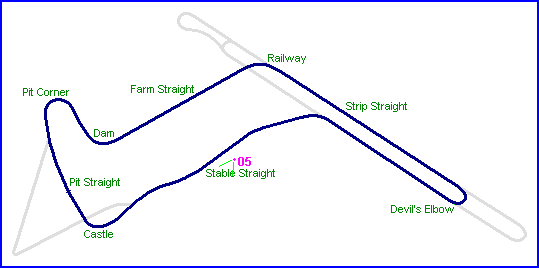
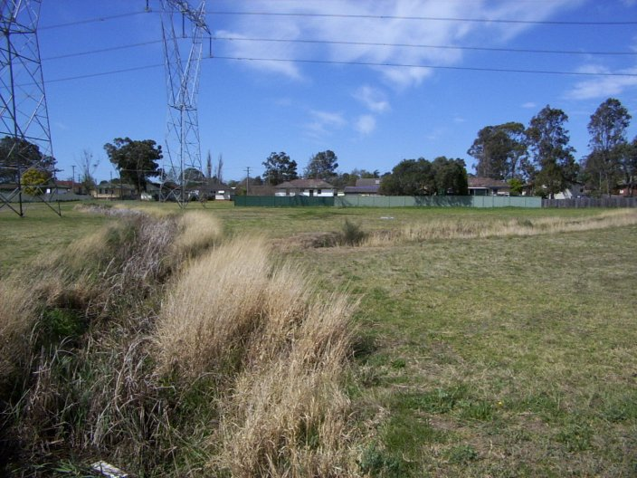
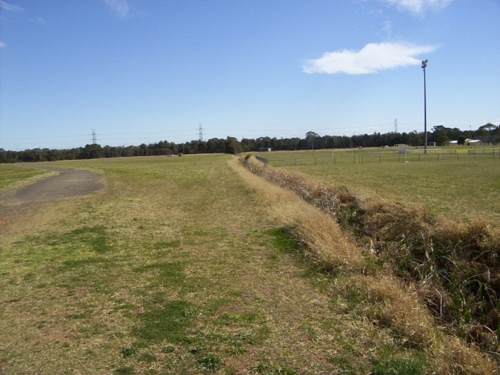
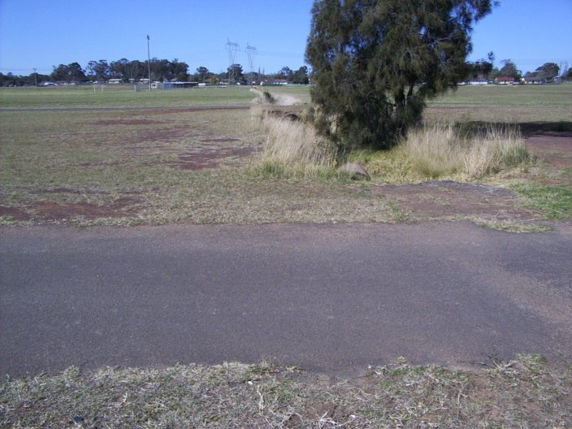

|| Contents | Strip Straight | Farm Straight & Railway Corner | Stable Straight | Strip Return Curve || Home ||

Numbers indicate the region where the photographs were taken. Click on direct links
below:
| 05 | 04 | 09 |

#05 - Looking back up Stable Straight towards castle corner and the pit area

#04 - The view along Stable Straight, as the circuit returns to the airstrip

#09 - Looking back up the Stable Straight from the airstrip
Photographs ©Conrad Zalewski. Reproduced here with kind permission.